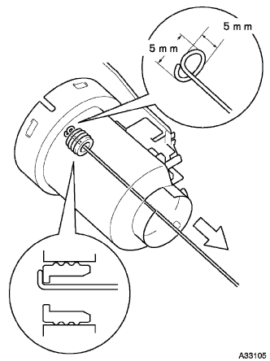

フューエル ポンプASSY 分解 |
| 1. フューエル サクション プレート取りはずし |
マイナスドライバーを使用して、フユーエルサクシヨンプレートのツメのかん合をはずす。
フユーエルポンプおよびフユーエルセンダゲージのコネクタを切り離す。
| 2. フューエルセンダゲージASSY取りはずし |
| 3. フューエルプレッシャ レギュレータASSY取りはずし |
| 4. フューエルサクション サポート NO.2取りはずし |
| 5. フューエルポンプ クッション ラバー取りはずし |
| 6. フューエル ポンプASSY取りはずし |
フユーエルタンクフユーエルフイルタからフユーエルポンプASSYをフユーエルポンプフイルタが付いた状態で引き抜く。
| 7. フューエルポンプ フィルタ取りはずし |
マイナスドライバーを使用して、フユーエルポンプフイルタクリップを取りはずす。
フユーエルポンプフイルタを取りはずす。
| 8. フューエルポンプ フィルタシール取りはずし |
|  |
フユーエルポンプフイルタシールがフユーエルタンクフユーエルフイルタに残った場合は、針金(φ1ｍｍ程度)の先端を図のように加工し、フユーエルポンプフイルタシールを引っ掛けて取りはずす。
| 9. フューエルポンプ スペーサ取りはずし |
| 10. フューエルポンプハーネス取りはずし |